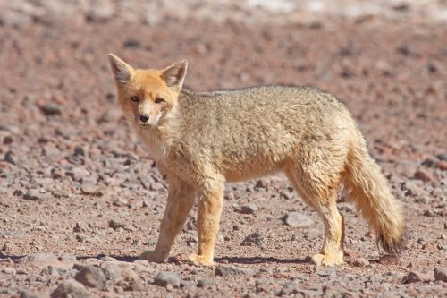

Se encuentra en una pequeña porción de la costa norte, en los
departamentos de Piura y Tumbes.
Se caracteriza por tener aguas más cálidas que el resto del país, lo
que hace que sea una zona lluviosa y por lo tanto con abundante
vegetación. Las aguas cálidas, además de ser el hábitat de una flora
y fauna muy particular, genera el desarrollo de los manglares, uno
de los ecosistemas más singulares y hermosos que se conocen.
Fauna
En los litorales se hallan distintos tipos de ave: rabihorcados o
aves fragata, albatros y petreles. Así como el camanay. Entre los
peces, se encuentran tiburones, atunes (como el de aleta amarilla),
el mero y marlines. También existen tortugas marinas, culebras y
cocodrilos (el único es el cocodrilo de Tumbes). En el lecho marino
se pueden encontrar varios crustáceos y moluscos: almejas,
cangrejos, caracoles, etc. Estos también pueden hallarse en tierra
firme, en el litoral.
Mar Frío
El ecosistema marítimo más extenso. Sus aguas frías provenientes de
la corriente del Humboldt, recorren toda la costa desde Tacna hasta
Pariñas (Piura). La abundancia de plancton le da un tono verde a sus
aguas y además permite el desarrollo de una variada vida animal y
vegetal, razón que explica la conocida riqueza de recursos del mar
peruano.
Fauna
El mar frío al igual que el tropical tiene una gran riqueza natural.
Sin embargo, animales como los reptiles ya dejaron de ser muy
abundantes en este tipo de mar ya que poseen "sangre fría". Entre
los mamíferos están los lobos marinos (el chusco por ejemplo),
cetáceos como los delfines, ballenas, cachalote y bufeos. Además, de
una especie de nutria denominada gato marino. Las aves en su mayor
parte pertenecen al grupo de los pelecaniformes y caradriformes. El
pelícano pardo, piquero, guanay, gaviotín común, gaviotines otros,
playeros, gaviota de Franklin, zarcillo y pingüino de Humboldt
forman parte del gran conjunto.
Desierto del Pacífico
El desierto del Pacífico es la formación natural más extendida a lo
largo de la costa peruana. Se le encuentra desde el departamento de
Piura hasta Tacna. Su clima es cálido en el verano y húmedo durante
el invierno, época en que son frecuentes las garúas y una espesa
capa de nubes impide el paso del sol.
Fauna

Destacan los murciélagos longirostros (como el longirostro de Pallas
y el peruano), vampiro común, fumador y negruzco común. Los
mamíferos carnívoros que podemos resaltar son el zorro culpeo (o
colorado), puma, zorrino y gato montés. Las presas de estos
carnívoros también viven en el desierto: el guanaco y venado de cola
blanca.
Bosque Seco Ecuatorial
Es una formación natural típica de la costa norte en la que
predominan especies vegetales adaptadas a las duras condiciones del
desierto: los algarrobos y ceibos, comunes en los departamentos de
Tumbes, Piura y Lambayeque. El bosque seco se extiende desde el
borde del mar hasta una distancia de 100 a 150 km tierra adentro.
Fauna
Las aves más representativas son la pava aliblanca que se encuentra
en peligro de extinción, las chachalacas, picaflor de Tumbes, loros
como el de frente roja, entre otros. Entre los mamíferos está el oso
de anteojos, oso hormiguero enano o sedoso, zorrino hocico de cerdo,
ocelote, puma, venado de cola blanca y pecaríes. Los reptiles
también abundan: iguanas, boas, y lagartijas de la familia Agamidae.
Bosque Tropical del Pacífico
Es una pequeña zona poblada por árboles enormes y selvas
exuberantes; jaguares, cocodrilos y monos aulladores, pero
curiosamente ubicada muy cerca del mar. Es el bosque tropical del
Pacífico, un lugar muy especial enclavado en el corazón del
departamento de Tumbes.
Fauna
Entre las aves está el cóndor de la selva, águila negra, gavilán
tijereta, caracara encrestado, paloma de los árboles, carpintero de
Guayaquil. Los mamíferos también son numerosos: oso hormiguero
amazónico, armadillo de nueve bandas y ardilla de nuca blanca. Los
peces de río son el bagre, mojarra, carachita, sábalo, carachama,
etc. Los reptiles suelen estar en los árboles o en agua. La boa
constrictora y cocodrilo de Tumbes son buenos ejemplos.
Serranía Esteparia
Se inicia alrededor de los 1.000 metros de altura por encima de las
nubes que cubren la costa, y se extiende por el lado occidental de
la cordillera de los Andes. Tiene grandes montañas, precipicios,
cañones y ríos torrentosos. El clima es seco pero con lluvias
frecuentes. Por las mañanas suele ser muy soleado y frio por las
noches. El puma, el venado gris, el guanaco y el gato montés, entre
otras especies, habitan esta zona.
Fauna
Mientras tanto, la fauna está representada por mamíferos como el
zorro andino, el puma y la taruca o venado andino (esto hasta los
3,500 msnm). También hay aves (aguiluchos y gavilanes). Entre los
últimos 300 metros de altura sobre el nivel del mar de esta
ecorregión, se pueden encontrar roedores como el cuy y aves como el
zorzal negro y la perdiz.
La Puna
La puna se ubica por encima de los 3.800 msnm. Se caracteriza por
sus temperaturas extremas, con mucho sol durante el día y frio
intenso durante las noches. Las grandes planicies y accidentadas
montañas caracterizan a su paisaje, así como los más altos glaciares
y nevados.
Fauna
La fauna más representativa son los camélidos americanos: llama,
vicuña y alpaca. Entre los mamíferos carnívoros está el puma,
zorrino y zorro culpeo. También hay diversas especies de patos, pero
el ave más representativa de esta ecorregión es el cóndor andino o
de los Andes.
El Páramo
Se ubica entre las regiones de Piura y Cajamarca, en áreas que
superan los 3.500 msnm. Se podría decir que es una especie de puna
húmeda, constantemente cubierta de un manto neblina. Esta
característica le da a su paisaje un halo de misterio. La
temperatura puede bajar hasta menos de 0°C, y el aire suele ser
helado. El oso de anteojos, el raro tapir lanudo, y venados habitan
este lugar.
Fauna
Las aves más representativas son las perdices, el búho del páramo,
el zampullín blanquillo, el cóndor andino, los aguiluchos, el águila
de cuello blanco, el cernícalo americano, el chotacabras y la
chochaperdiz andina. Entre los mamíferos están las zarigüeyas, el
zorro andino, puma, gato andino, venado gris, pudú, venado colorado
del páramo y ratón campestre. Los insectos son en su mayoría
coleópteros, ortópteros y mantodeos. Los anfibios típicos son el
sapito marsupial y varias especies de ranas de montaña.
La Selva Alta
Este territorio precede a la extensa llanura amazónica. Se
caracteriza por sus hermosos paisajes de selva montañosa y por ser
la zona más lluviosa del país. Su vegetación es considerada como una
de las más exuberantes del trópico, y es el hogar del gallito de las
rocas, el ave nacional del Perú.
Fauna
Las aves más representativas son las perdices, el pato de los
torrentes, gallinazo de cabeza negra, gallinazo de cabeza roja,
águila de copete, halcón palomero, etc. Los anfibios más comunes son
sapos del género Atelopus. Y entre los reptiles están las serpientes
típicas de la selva como la jergón. Los mamíferos de la selva alta
son también muchos: zarigüeya acuática, rata marsupial de cuatro
ojos, muca de orejas negras, murciélago hoja de lanza mayor, etc.
Selva Baja
Es el hábitat más diverso del planeta y cubre dos tercios del
territorio peruano. Su clima es tan caluroso como húmedo y por sus
planicies discurren los ríos más grandes del país, como el Amazonas,
el Ucayali y Madre de Dios. La flora de la región está compuesta por
más de 20.000 especies de plantas y su fauna es extraordinariamente
rica y variada
Fauna
Entre las aves está el águila harpía, la polla sultana o gallinula
purpúrea, golondrina negra, gavilán perlado, numerosas especies de
loros y cotorras, así como horneros, espigueros y otros grupos del
orden Paseriformes. También hay un sinfín de mamíferos, tales como:
la zarigüeya acuática, comadrejita marsupial pálida, vampiro común,
vampiro peludo, mono de noche, maquisapa de vientre blanco, etc.
La Sabana de Palmeras
Es una pequeña región ubicada en el extremo oriental de Madre de
Dios, al lado de la frontera con Bolivia. Este sector ofrece una
vista de palmeras y pastos altos extendiéndose por una enorme
llanura. Este particular paisaje llama la atención por irrumpir en
medio de los bosques de la selva tropical.
Fauna
Las principales especies de animales que habitan esta ecorregión
son:
Aves: perdices, gavilán de cola blanca, gallinetas, psitaciformes
(loros y guacamayos), entre otros.
Mamíferos: oso hormiguero gigante o bandeado, armadillo de nueve
bandas, armadillo gigante, tapir, jaguar, lobo de crin y algunos
roedores del tipo ratón. Reptiles: anaconda, boa verde, boa marrón,
boa constrictora y aguaje machaco.
Anfibios: ranas arbóreas. Insectos: principalmente termitas
trabajando y viviendo en sus termiteros y en época de reproducción
haciendo un verdadero espectáculo nupcial.